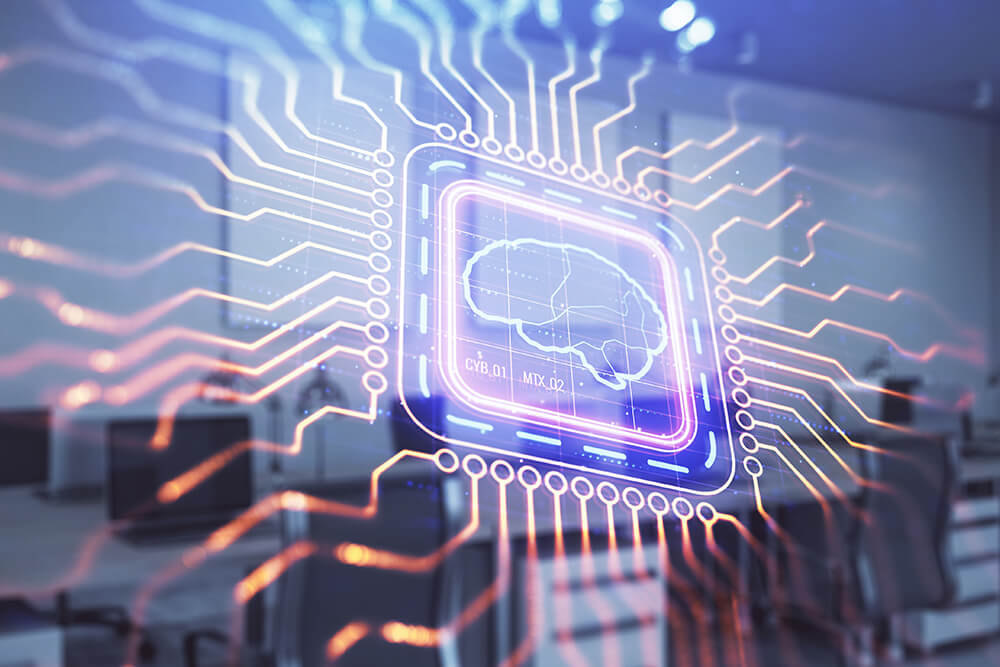

We’ve compiled a list of disruptive innovations that are shaping the technological landscape around the world and shaping our future through reports from reputable scientific journals and the world’s largest media.
Now the materials of RBC Trends can not only be read, but also listened to. Search and subscribe to the Sounds Like Trending podcast on Apple Podcasts, Yandex.Music, Castbox, or another platform where you listen to podcasts.
Lithium metal batteries have every chance to change the balance of power in the car market. Their energy density is equal to 1 kWh per liter of volume, which is almost twice that of lithium-ion batteries. According to MIT Technology Review, thanks to this, electric cars charge much faster, and most importantly, the charge lasts 80% longer than with lithium-ion batteries. Such indicators remain after 800 cycles.
Skeptics argue that the test results are still too early to be considered successful: they were carried out on single-layer cells, while in real batteries they should be multi-layer. In mass production, this can lead to unforeseen risks.
The American startup QuantumScape (among its investors – Bill Gates), which develops lithium metal batteries, conducted its first tests in December 2020. After successful trials, it has already struck a deal with Volkswagen, which will begin producing electric vehicles with these batteries in 2025.Conventional – vector – vaccines contain an attenuated or inactive pathogen of the virus. MRNA vaccines prompt the body to produce a protein fragment contained in the causative agent COVID-19, which immediately attacks the immune system. As a result, there is a strong immunity to the virus, the body becomes resistant to infection.
Matrix (informational) RNAs are good because they are easy to modify for any new virus strain. They can also be used to fight infections (such as malaria), cancer, sickle cell disease, HIV, and other serious illnesses.However, even the most advanced transformers trained on huge data sets do not understand the meaning of the words and phrases they generate. Training them requires huge amounts of data and computational resources, which, in turn, leave a large carbon footprint. Another problem is the imperfection of datasets for training neural networks: texts on the Internet often contain distortions, manipulations and outright fakes.
One of the most promising directions in the development of AI and neural networks is expanding the range of perception. Now algorithms are able to recognize images, faces, fingerprints, sounds and voice. They can also speak and generate images and videos, mimicking our perception of different senses. MIT scientists note that AI lacks emotional intelligence and feelings to get closer to humans. Unlike AI, a person can not only process information and issue ready-made solutions, but also take into account the context, many external and internal factors, and most importantly, act in conditions of uncertainty and a changing environment. For example, DeepMind’s AlphaGo algorithm is capable of beating the world champion in go and chess, but it still cannot expand its strategy beyond the board. So far, even the most advanced algorithms, including GPT-3, are only on their way. Now developers are faced with the task of creating multimodal systems that would combine text recognition and sensory perception to process information and find solutions.But the reason for leaks may be not only weak data protection, but also the fact that the very model of their collection and storage is outdated. Data Trusts – “data trust” – a new approach that can change everything. In this case, a special trust fund is created, which stores and manages the data of people on their behalf and on their behalf.
According to Mozilla representatives, the principle of data confidentiality implies that you transfer your data to someone who uses it for your own benefit. At the same time, all data is stored in one place, and the services that you use get access to them on your terms. The trust is fully legally responsible for respecting your interests and privacy.With 5G, many employees will be able to permanently move to remote work, and companies will make faster decisions based on streaming analytics. From 2023 to 2025, technology will bring the US economy up to $ 2.7 trillion and up to 16 million jobs.
The new Wi-Fi 6 standard will add a new 6 GHz frequency to the two already available – 2.4 and 5 GHz. It pursues the same goals as 5G: it helps to speed up the Internet connection (up to 2 Gb / s for mobile devices), make it more stable and broadband – it will be possible to connect even more devices to one point. In this case, the network itself will distribute Internet traffic between devices, depending on their capacity.Cisco experts name the main benefits of Wi-Fi 6 for business:
According to a Deloitte poll, 86% of CEOs believe advanced wireless will transform their organization within three years, and 79% say the same about their industry.
According to The Verge, the first 316 million mobile devices with Wi-Fi 6E will appear in 2023. It is expected that 5G and Wi-Fi 6 will not compete, but mutually complement each other – depending on the tasks and types of devices. In Russia, operators will spend more than RUB 1.1 trillion. for the development of 5G from 2023 to 2027. Active implementation will begin in 2024, but the timing may be shifted due to low demand. But Wi-Fi 6 is unlikely to work: the network frequencies are already occupied by fixed radio communications, and in the future they can be transferred under 5G.Today, these technologies are used in healthcare – to train surgeons or perform operations with diagnostic data in the form of holograms and an online consultation of doctors. In early February 2023, Microsoft conducted an online broadcast of 12 operations performed in MR – mixed reality. Surgeons from 13 countries were able to connect online and see all diagnostic data in the form of holograms and consult each other.
n retail, AR allows you to try on products, place furniture in the interior before purchasing, and receive personalized offers. For example, toy maker Mattel (Barbie dolls and others) uses augmented reality for Hot Wheels toy cars. Buyers can point their smartphone at a specific model to play with it on any surface: At IKEA, using a VR headset, you can imagine what your kitchen will look like with the selected furniture.According to Grand View Research, the volume of the global 3D printing market in 2019 was estimated at $ 11.58 billion, and from 2020 to 2027 its average annual growth will be more than 14%. By 2027, there will be 8 million 3D printers in the world – almost six times more than in 2018. 77% of them are industrial printers. With the help of 3D printing, they are already creating clothes and shoes, interior items, mechanical parts and even prostheses. Many parts for the Rutherford engines installed on the Electron launch vehicle are 3D printed.
We are now one step away from using 3D printing to create the necessary objects on the lunar surface using moon dust. This will greatly simplify the colonization of the satellite: you will not have to deliver heavy cargo and equipment there.Green hydrogen is now part of the global strategy to reduce carbon footprint and switch to renewable energy sources. Together with electric cars, hydrogen engines are intended to become the main alternative to diesel vehicles.
“Green” hydrogen is produced in an environmentally friendly way without the use of nuclear energy and natural gas. The most harmless method is electrolysis, when an electric current is passed through the water. This will get rid of 830 million tons of harmful carbon dioxide emissions per year – the consequences of non-environmentally friendly production of hydrogen.According to Allied Market Research, the hydrogen fuel cell vehicle market will reach $ 42 billion by 2026, with a 66.9% CAGR. It will be spurred on by growing environmental issues and international initiatives to address them, as well as the potential of technology alongside electric cars. Hydrogen-powered cars are already produced by Toyota, Honda, Hyundai, Audi, BMW, Ford, Nissan, Daimler. California will build 100 hydrogen filling stations, and plan to bring the number of zero-emission vehicles to 1.5 million by 2025. Airbus has announced plans to accelerate development of commercial hydrogen-powered jets and eliminate the use of hybrid engines altogether. This means the first zero-emission aircraft will be available by 2035.
| Referensi: Airport Technology |
|---|